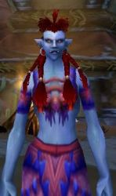

Les Terres de Kirin Tor
Kléophis
Points : 0

Joué par :
[ Information masquée ]
Age : 18
Lieu de naisance : village Sen'jin
Sexe : Femme
Race : Troll
Faction : Horde
Formation : Chaman
Niveau : 32
Guilde :
Artisanat 1 : Herboriste
Artisanat 2 : Alchimiste
Envoyer un MP
Description : Kléophis a quitté Durotar pour défendre les terres de Kalimdor contre la menace des Réprouvés et pour freiner les ardeurs de l'Alliance.
Troisième Ère [4]
Lune de la Force
Décade du Panda
Décade du Gorille
Décade de l'Ours
Lune d'Agilité [2]
Décade du Tigre
Décade du Singe
Décade du Faucon [2]
le journal de Kléophis - 1
Cher journal,le journal de Kléophis - 2
je t'écris aujourd'hui pour te faire part de sentiments que je ressens depuis quelques temps mais que je n'arrivais pas a formuler.
Il y a quelques temps, j'ai intégré la Garde Militaire. Notre but est de défendre les terres de Kalimdor et de faire de la horde une nation solide.
J'y suis entrée avec Squall, je ne me sens donc pas trop seule. Tu sais comme il a toujours été proche de moi.
C'est dans la Garde Militaire que j'ai fait la connaissance de Theyliis. Un troll voleur. Et ce fut le coup de foudre. J'ai tout de suite été séduite par ses cheveux blonds et son air distingué.
Et je lui ai plu. Au milieu de la caverne des Lamentations, nous nous sommes embrassés. Et ca je n'en ai rien dit parce que j'en étais encore trop troublée.
Et il ne fait que me dire son amour. Je ne sais plus où me mettre! Je ne savais pas que les trolls étaient si romantiques, c'est une exception? Je voulais t'en parler car cela faisait un moment que je le gardais en moi et il fallait que j'en parle.
Je ne sais pas encore si je l'aime, c'est un bien grand mot, mais je sais que je m'attache à lui quand même.
La dernière fois que nous nous sommes vus, il y a 2 jours, il m'a fait promettre de revenir le voir ce soir. Que me réserve-t-il??
Cher journal,
et bien oui j'ai vu Theyliis hier soir. Et je l'aime trop. Il est beau, tendre, romantique, tout quoi!!
Hier nous nous sommes vus a Orgrimmar, je m'étais acheté une robe pour l'occasion, puis nous sommes allés a la rivière Furie-du-sud pour une petite baignade. Qu'il est beau en slip de bain!!! Tu verrais ses muscles!!!
Puis il m'a provoquée en duel pour s'amuser. Et il m'a battue! Snifff!! Il faut dire que face à son 52ème cercle, je ne peux pas faire grand chose.
Comme il se faisait tard, nous sommes rentrés a Orgrimmar pour que je puisse me coucher en sécurité. Il m'a encore dit qu'il m'aimait et la prochaine fois, il m'emmenera dans un superbe endroit avec une cascade. Humm, j'en rêve déjà.
Je te quitte et m'en vais penser encore un peu à lui. Theyliis....
Lune de l'Esprit [2]
Décade de la Chouette
Décade de la Baleine [2]
Une enfant nomade
Kléophis Lok'tin est née il y a 18 ans dans le village de Zul'kunda, dans la vallée de Strangleronce.La promesse
Son enfance fut réglée par l'asservissement de sa tribu aux autres plus puissantes, mais elle apprit la sagesse chamanique dans l'espoir de relever un jour la tribu Darkspear.
Elle était adolescente lorsque les humains commencèrent à s'installer dans Strangleronce. Elle ne put participer au combat, mais voyant bon nombre des siens tomber, une haine féroce pour les races de l'Alliance grandit en elle. C'est alors que le chef Thrall et les guerriers de la Horde entrèrent en scène.
Les trolls, conduits par Sen'jin, demandèrent de l'aide à la Horde et, ainsi liés, remportèrent la victoire. Cependant, les murlocs en profitèrent pour attaquer les vainqueurs et, dans la lutte qui suivit, Sen'jin donna sa vie. Une fois le combat terminé en sa faveur, Thrall fit une place pour les trolls dans la Horde et leur promit de leur laisser une partie des terres qu'il comptait fonder en Kalimdor.
Ainsi, un an plus tard, Kléophis quitta Zul'kunda pour les îles de l'Echo. Elle aida à l'établissement de sa tribu jusqu'à la trahison de Zalazane. Elle fuya alors une nouvelle fois vers la côte de Durotar où fut construit le village bien connu de Sen'jin.
A 18 ans, enfin, Kléophis prit la décision de quitter son village pour rendre sa gloire au peuple Darkspear en aidant la Horde à défendre les terres de Kalimdor et à combattre l'Alliance.
La première fois que Kléophis rencontra Squall, c'était à Strangleronce lorsque les trolls avaient fort à faire avec les humains. Il faisait partie de la troupe qui accompagnait Thrall.
Elle fut tout de suite impressionnée par sa présence. Il dégageait une force incroyable: il était plus grand qu'elle, très carré, le visage déterminé, peu bavard. Kléophis sentait que c'était un soldat, un vrai. Lors du combat contre les humains, Squall fut exemplaire. Avec sa panthère des ombres nommée Prisca, il réduisit à néant près d'un tiers des troupes. Sa vaillance plut également à Réol Lok'tin, le père de Kléophis, qui se lia d'amitié avec Squall.
Il était donc normal que Squall suive ses amis trolls lorsqu'ils se rendirent aux îles de l'Echo. Il les laissa s'installer et partit fonder, avec quelques compagnons orcs, le village de Tranchecolline. Mais très vite, Zalazane devint fou et se tourna contre la tribu Darkspear. Squall chassait dans les environs lorsqu'il entendit des cris provenant des îles. Il courut voir ce qui se passait mais ne put que constater la fuite des trolls vers la côte de Durotar et quelques combats épars. Il ne savait que faire. Il voyait des trolls autrefois amis lutter l'un contre l'autre férocement. Que s'était-il passé? Qui aider? Il aperçut alors Réol, à terre, blessé. Il essaya tant bien que mal de le soigner mais la blessure était trop profonde. Réol le savait.
"Squall mon ami, mon bon ami... Tu as toujours été bien courageux, tu as toujours été là pour nous. Mais je sens que ma fin est proche... S'il te plaît Squall... Promets... Promets-moi... Promets-moi que tu veilleras sur Kléophis... Ma petite Kléo... Elle est si jeune, si fragile. Promets-le-moi."
Réol rendit l'âme tandis que Squall l'assurait qu'aucun être de ce monde ne ferait de mal à Kléophis. C'était un homme fort, mais il ne put retenir une larme devant la mort de son ami.
Les combats étaient pratiquement terminés, une grande partie des trolls avait pris la fuite. Squall prit le corps de Réol, l'installa sur le dos de Prisca pour traverser l'étendue d'eau entre les îles de l'Echo et Durotar et le porta jusqu'à Tranchecolline, où les trolls avaient trouvé refuge, pour lui offrir une sépulture récente. Plus tard, il conduisit une troupe pour récupérer les corps des autres trolls qui étaient morts au combat.
Décade du Lapin
Quatrième Ère [3]
Lune de la Force [3]
Décade du Panda [1]
Coup de foudre
Kléophis retira ses bottes, qu'elle posa au pied de l'arbre le plus proche, remonta son pantalon sur ses genoux et s'assit au bord de la rivière Furie-du-sud, à l'ouest des portes d'Orgrimmar, les pieds dans l'eau.
Son coeur était prêt à exploser tellement elle était heureuse. Theyliis venait de la demander en mariage. Elle, Kléophis, 18 ans à peine, aux portes du bonheur absolu.
Elle avait rencontré Theyliis, un troll voleur de 21 ans, lors de la première réunion de la Garde Militaire, une guilde en formation. Il lui avait plu immédiatement par son allure, ses beaux cheveux dorés... Et elle avait cru comprendre qu'elle ne le laissait pas non plus indifférent...
Ce ne fut qu'une semaine plus tard qu'ils s'embrassèrent pour la première fois. Dans la caverne des lamentations. Pas l'endroit le plus romantique, mais elle avait été séduite par son courage et sa force. Et il se montrait superbement généreux, pourvoyant à tous les besoins de "sa douce", comme il se plaisait à l'appeler.
La suite ne fut qu'une série de petits bonheurs: escapades à Feralas, dans Strangleronce, dans Ashenvale... Kléophis vivait un rêve, Theyliis lui répétant sans cesse qu'il était fou d'elle et qu'il ne la quitterait jamais.
Et ce soir, il l'avait demandée en mariage. Il voulait unir leur destinée. Kléophis ferma les yeux et savoura ce moment délectable.
Décade du Gorille [1]
Préparatifs
Des coups furent frappés à la porte.
"Ma chérie? Je peux entrer?", dit Lyra en entrebaillant la porte.
Kléophis ne put retenir un sourire.
"Oui maman! Entre puisque tu en as tellement envie..."
La trollesse entra dans la pièce avec élan puis s'immobilisa, la main sur la poignée. Elle resta sans voix. Kléophis se tenait debout au milieu de la pièce; elle venait de se vêtir de la robe de mariée dont elle avait fait l'acquisition un peu plus tôt à Orgrimmar. Les yeux de Lyra se mirent à briller, elle mit une main sur sa bouche. Kléophis s'approcha d'elle, d'un air compatissant, et la prit dans ses bras.
"Mais non enfin maman, tu ne vas pas pleurer!, dit-elle en essayant les larmes qui perlaient le long des joues de sa mère. Je ne vais pas me suicider, je vais me marier!"
Lyra sourit.
"Oh ma chérie, je suis si heureuse pour toi. J'ai l'impression de revenir des années en arrière, à l'époque où ton père a fait sa demande. Nous étions heureux à Strangleronce, à l'époque." Elle soupira. "Enfin, tout ça, c'est du passé..."
"Et je vais être heureuse, ici, en Durotar, dit Kléophis en lui baisant le front. Ne t'inquiète donc pas pour moi."
Des bruits de pas se firent entendre derrière elles. Quelqu'un entrait dans la hutte et se dirigeait vers la chambre de Kléophis.
"Oh...", dit Squall en arrivant sur le pas de la porte. Lyra se tourna vers lui.
"N'est-elle pas belle ma Kléo, Squall? Theyliis va être fou le soir du mariage..."
"Oh, oui, pas de doute. Tu es magnifique, Kléo."
Kléophis sourit à l'orc.
"Merci Squall."
Squall sourit à son tour, puis reprend ses esprits.
"Humm, bon. Je me suis renseigné un peu pour les alliances et on m'a dit qu'on pouvait en trouver à Booty Bay. C'est encore dangereux pour toi Kléo, même si c'est une ville neutre, je préfère donc y aller moi-même. Je m'en occuperai dans la semaine. Quant aux invitations, cela suit son cours. J'en parle beaucoup autour de moi."
Lyra tapa sur le dos de Squall.
"Ah mon cher enfant, tu nous es bien utile maintenant que Réol n'est plus. Nous autres faibles femmes ne pouvons aller plus loin que le village sans risquer de nous faire tuer. Viens donc boire un peu de bière, cela te redonnera un peu de courage", dit-elle en se dirigeant vers la cuisine.
Squall regarda la trollesse sortir de la pièce puis se tourna vers Kléophis.
"Faibles femmes? Ta mère aurait-elle oublié que tu es allée jusqu'à Ashenvale?"
Kléophis rit.
"Oui, elle a du mal à se faire à l'idée que sa fille parcourt le monde..."
Squall regarda intensément Kléophis.
"Alors, la date approche..."
"Oui, j'ai hâte, vraiment hâte." Elle soupira. "Etre la femme de Theyliis", dit-elle avec des étoiles dans les yeux.
Décade de l'Ours [1]
Rupture
Lorsque Kléophis entra dans la hutte, sa mère Lyra discutait avec Squall autour de la table. Elle s'assit près d'eux, l'air morne. Lyra se tourna vers elle.
"Quelque chose ne va pas ma Kléo?", lui demanda-t-elle.
Kléophis prit une grande inspiration et sortit d'un seul souffle:
"Theyliis a annulé le mariage".
Squall et Lyra regardèrent Kléophis en silence, abasourdis par la nouvelle.
"Que... Quoi? Comment ça annulé? Pourquoi?", demanda Lyra.
Kléophis tourna la tête sur le côté pour ne pas avoir à croiser leur regard.
"Je l'ai vu à Orgrimmar, dit-elle. Je lui ai dit bonjour et m'apprêtais à l'embrasser lorsqu'il m'a repoussée. Il m'a alors annoncé qu'il avait réfléchi et qu'il ne voulait plus se marier. Qu'il préférait en rester là. Je lui ai demandé des explications, bien entendu, mais rien. Il a prétendu qu'il était attendu pour protéger les ressources du bassin d'Arathi et... il est parti." Kléophis baissa la tête. "Il faut croire qu'il a ses raisons."
"Je vais lui apprendre les bonnes manières, plutôt!, rugit Squall en se levant bruyamment. Je l'avais prévenu qu'il tâterait de ma hache s'il te faisait du mal."
Kléophis se leva d'un bond et se précipita pour arrêter Squall. Elle le prit par le bras.
"Non, je t'en prie! Ne lui fais pas de mal! Non!"
Squall la regardait intensément.
"Il n'a pas le droit de te traiter comme ça! De te quitter sans te donner d'explications!"
"Et toutes ces invitations...", dit Lyra, toujours assise à table.
Kléophis suppliait Squall du regard.
"Je t'en prie."
"Il doit payer."
"Je t'en prie."
Squall hésita.
"Tu l'aimes encore, c'est ça? Ce voleur indigne. Ce fourbe... Je n'ai jamais eu totalement confiance en lui, je te l'avais dit."
"Je t'en prie", dit une dernière fois Kléophis en fermant les yeux et en posant sa tête sur le torse de Squall. "Si tu veux mon bien, restes avec moi. Oublions-le. S'il te plaît."
Ce n'est qu'à ce moment-là qu'elle laissa libre cours à ses larmes.
Lune d'Agilité
Décade du Tigre
Décade du Singe
Décade du Faucon
Lune de l'Esprit
Décade de la Chouette
Décade de la Baleine
Décade du Lapin